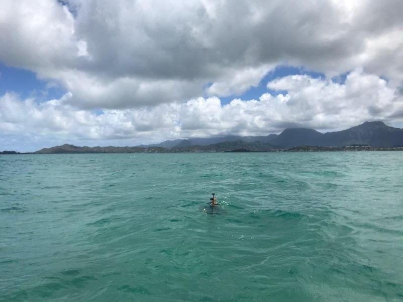

Engineering

Air Sampling Drone 2022
Mobile air sampling system for tracking of atmospheric greenhouse gases, in collaboration with the Scripps Institute of Oceanography.

Ocean Drifters 2019
Low-cost floating devices for studying currents and dispersion.

Ergonomic Robotics 2019-2020
Robotics projects with human-centered mechanical design.

Rehabilitation Sensor 2018
Designed and prototyped a wearable medical brace to support post-surgical rehabilitation by detecting movements that could re-injure the surgical site. The device alerts users through light, vibration, and sound feedback. Led mechanical design in a 5-person team, gaining experience with Arduino, CAD, 3D printing, and physical prototyping. Presented at a showcase of 150+ attendees; awarded 3rd place out of 15+ teams.